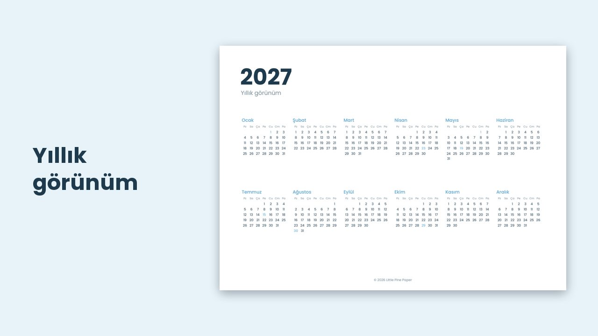
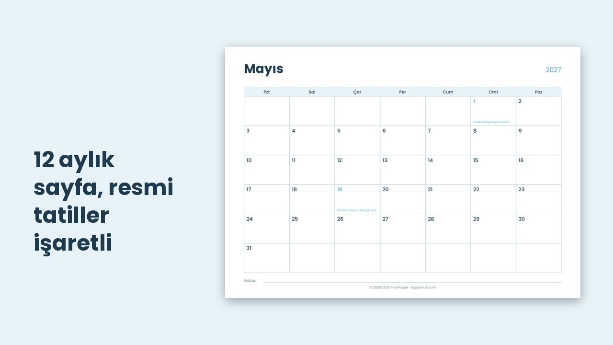

2027 Takvimi Yazdırılabilir PDF - Sade Tasarım Yatay Duvar ve Masa Takvimi



2027 Takvimi Yazdırılabilir PDF ile yılınızı düzenli ve sade bir şekilde planlayın. Ev ofisleri, öğrenciler ve aileler için tasarlanan bu yatay takvim, minimalist yapısıyla her mekana uyum sağlar.
Paket İçeriği:
- Bir adet 2027 yıllık genel bakış sayfası.
- 12 adet aylık planlama sayfası (Ocak - Aralık).
- Planlama için geniş gün kutucukları ve alt kısımda özel not satırı.
- Pazartesi başlayan hafta düzeni.
- İşaretli Sabit Resmi Tatiller: 1 Ocak, 23 Nisan, 1 Mayıs, 19 Mayıs, 15 Temmuz, 30 Ağustos ve 29 Ekim.
- Önemli Not: Dini bayramlar (Ramazan ve Kurban Bayramı gibi) bu takvimde işaretli değildir.
Nasıl Kullanılır?
- Dosyayı satın aldıktan sonra anında indirin.
- A4 veya US Letter boyutundaki PDF dosyalarından size uygun olanı seçin.
- Evde veya yerel bir baskı merkezinde dilediğiniz kadar yazdırarak duvarınıza veya masanıza ekleyin.
Bilmeniz Gerekenler:
Bu ürün dijital bir indirmedir; adresinize fiziksel bir ürün gönderilmez. Dosyalar sadece kişisel ve sınıf içi kullanım içindir. Little Pine Paper ürünleri ticari amaçla yeniden satılamaz veya paylaşılamaz.